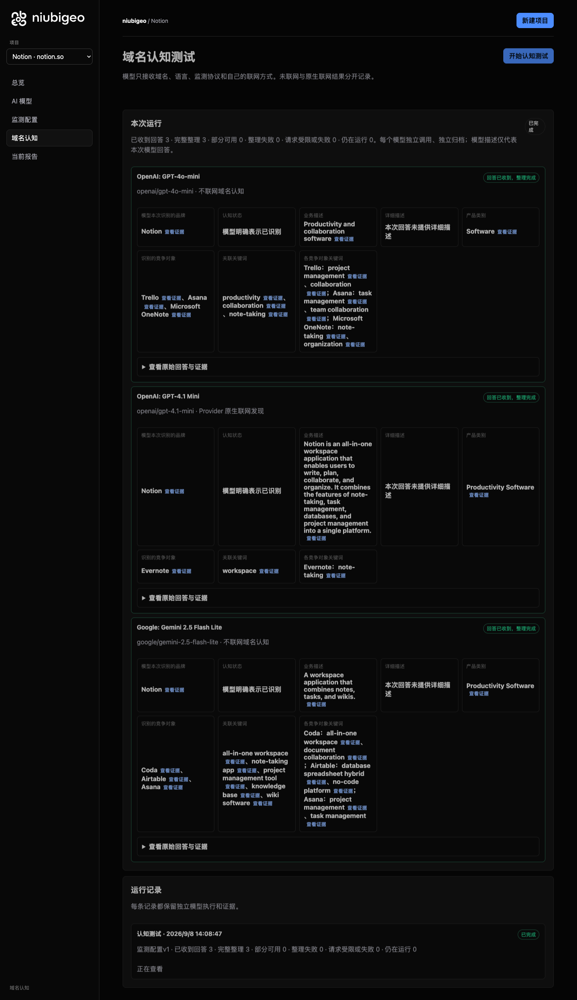

🌐 官方在线文档与静态镜像中心 (GitHub Pages)：https://shijiuwei.github.io/niubigeo-mirror-479/
📚 技术规约与文档归档菜单 (Docs Catalog)：https://shijiuwei.github.io/niubigeo-mirror-479/docs/

Does AI recommend your product? Who shows up instead?
Enter a domain. Compare how models describe your product, who they recommend, and which sources they cite.
Open the GEO reporting black box. Put evidence in your hands.
Self-host · Official promotion platform · AI advisor
Website · GitHub · 简体中文 · UI: English, 简体中文, Português (Brasil) · Quick start · 20 real cases · Releases · Packages · Docs
Features · How to use it · Monitoring · Compare tools · Why NiubiGEO · Sponsors · Official services · FAQ
You have built a product, written the docs and worked to get the word out. When people ask AI for tools, does your product make it into the answer?
NiubiGEO is an open-source tool for tracking brand visibility and competitors in AI answers. Start with a domain to see how different models describe your product and which competitors they name. Then test keywords to find out who appears in the answers. Open any result to inspect the original response and returned sources.

|
NiubiGEO Open-source AI visibility. Human-powered growth. Check it out on Product Hunt → |
What can you find out?
- How AI sees your product. What does it call your brand, and what does it think you do? Do different models agree?
- Who else appears. Which products does each model associate with yours? Do you or your competitors appear in keyword tests?
- Which words it associates with you. Compare the keywords models connect to your brand and other products to find differences worth investigating.
- Where the results come from. Inspect original answers, returned citations and changes across repeated tests.
See the workbench: PostHog model answers and evidence links
Read what each model actually said, then open the sources to check. An original screenshot from the September 8, 2026 study. Read the PostHog case.
Get started
Want to see it in action first? Explore 20 real cases. No installation or API key needed.
To test your own product, you will need Node.js 22.13+ and your own OpenRouter API key:
git clone --branch v0.2.0 --depth 1 https://github.com/Albert-Weasker/niubigeo.git
cd niubigeo
npm ci
cp .env.example .env
Set OPENROUTER_API_KEY in .env, then start the app:
npm run server
Open http://localhost:8787 to create your first project.
Prefer a container? Follow the Docker guide. Existing users should read Backups and upgrades.
How to use it
- Enter a domain. Create a project for your product. It is saved before you start testing.
- Choose your models. Search for and select one or more models, then set web search separately for each.
- Save your configuration and start a test. Models answer independently. If one fails, the other results remain available.
- Open the results. Review descriptions, competitors, keywords and sources. Open the original answer to check a finding.
- Keep observing. Confirm the keywords you want to test, then run keyword tests. Repeat measurements or set up scheduled monitoring to collect comparable records.
Start with one model, then add more once you know what to look for. Reading the cases is free; testing your own project incurs model and search API charges.
Talk to the video advisor
The workbench shows a small advisor card by default. Click it to open the official advisor entry point, which redirects to the NiubiStar-hosted video advisor. You do not need to provide an API key to use the advisor.
The local workbench loads no third-party script, iframe or video for this card, and the link does not include project data or model API keys. Choose which project details to share during your conversation on the external service.
To hide the card, set NIUBIGEO_VIDEO_ADVISOR_ENABLED=false in .env and restart the server, or recreate the web container with docker compose up -d. 0 and off also hide it. Local diagnostics continue to work with the card disabled. This link adds no payment requirement and does not change the Apache-2.0 license.
From one answer to ongoing observation
| What you want to do | What NiubiGEO provides |
|---|---|
| Manage several products | Each domain has its own project, configuration, runs and evidence. Switch projects without mixing products into one report. |
| Compare models | Search, filter and select OpenRouter models. Inspect each model’s answer, result and errors, and retry a failed model separately. |
| Choose whether to use web search | Set each model to offline or its supported native search mode. Results retain the actual execution conditions. |
| Understand brand and competitor descriptions | Read business descriptions, categories, competing products and their associated keywords side by side. |
| See who appears without naming your brand | Confirm keywords, then test them without including your target brand’s name. Inspect actual mentions, recommendations and original wording. |
| Check the evidence | Original answers, text locations, Provider citations and ordinary answer URLs are shown separately. Failures and uncertainty remain on record. |
| Build a history | Save what you want to measure, repeat tests or schedule them. Follow historical records and data points back to the answers behind them. |
Repeated measurements and scheduled monitoring
The first domain test shows how models describe your product now. Confirm the competing products and keywords to measure that scope again or create a schedule. Previous records remain when your model selection changes; new models do not acquire invented history.
Scheduled execution requires the monitoring worker to be running. PostHog’s three recorded measurements include a scheduled run, with answers and failures available for each. A few minutes of repeated tests do not establish long-term growth.
How it works in detail · Metrics and comparison conditions · Known issues
Three real examples
| Notion | Figma | PostHog |
|---|---|---|
| How models describe a product | Who appears without naming a brand | Sources and repeated tests |
Notion · One product, different descriptions
In the notion.so test, models emphasized different aspects of the product: notes, a workspace and collaboration. They also named different competing products.
Reading the answers side by side shows which capabilities each model mentioned, which it left out and which products it associated with Notion.
These are descriptions from this test. Recognizing a domain after being asked about it is not the same as recommending it unprompted.
Read Notion’s descriptions and competing products
View Notion’s original model-results screenshot

Figma · Who appears when the brand is not named?
In a Prototyping keyword test that did not name Figma, two offline answers mainly explained the concept of prototyping. An answer with web search requested named Figma and described its prototyping features.
This reveals which answers named an actual product and which only explained a concept. A brand mention, a positive description and an explicit recommendation are different things.
Figma’s prototyping tools make it easy to build and share high-fidelity, no-code, interactive prototypes.
Excerpt from the original answer: GPT-4.1 mini · native search requested.
Explore the Figma keyword test
PostHog · Follow a source back to the answer
In the Feature Flags test for PostHog, model responses returned citations to pages including a Splunk blog post. NiubiGEO stores these separately from ordinary URLs in the answer text.
Follow a source to the corresponding answer and check where it appeared. A citation helps you inspect the response; it does not, by itself, explain why a model recommended something.
The case also includes three closely spaced measurements, one triggered by a schedule. Each run includes its results and failures. These records demonstrate repeated testing, not long-term growth.
Explore PostHog’s sources and repeated measurements
17 more products
The collection covers 20 real domains, each with at least one analyzable domain answer. 11 cases also ran keyword tests. Every case includes its test conditions, results, original answers and screenshots, along with failures and unresolved findings.
Browse all cases · Known issues
Which AI visibility tool fits your team?
Choose NiubiGEO when you want free access to the source, self-hosting, model choice with your own API key, and domain and keyword tests that you can trace back to the original evidence. You cover model, search and hosting costs.
Consider a commercial platform when hosted services, marketing workflows or an existing search dataset matter more to you. The priorities below offer a starting point.
| Tool and official site | Consider it when you need |
|---|---|
| Profound | AI brand monitoring, prompt-demand data and content marketing workflows. |
| Peec AI | AI search analytics and brand-performance tracking for marketing teams. |
| Otterly.AI | AI search monitoring, content audits and optimization guidance. |
| Semrush AI Visibility | AI visibility and brand-performance tracking within the Semrush product suite. |
| Ahrefs Brand Radar | A brand visibility index, custom prompt tracking and search data. |
| AthenaHQ | AI search citation analysis, content-gap discovery and action guidance. |
| Scrunch | Brand monitoring, citation analysis and content delivery for AI agents. |
These are selection suggestions based on the linked official sites, checked on September 8, 2026, not a controlled benchmark or ranking. Check each vendor’s site for current plans and capabilities.
Why we built NiubiGEO
Product teams need more than a score. We want to know whether our product is being seen, where it is misunderstood, why a competitor appears in an answer and what to investigate next.
Without the original answers, sources and test conditions, it is hard to know which findings to trust or where to spend your time and budget.
NiubiGEO makes those questions easier to investigate: read different models’ answers, spot differences in descriptions and keywords, check the sources and keep observing. Where the evidence is missing, the result stays uncertain. Failed runs stay on record, too.
Where we want to go
Give developers, small teams and brands a way to check for themselves how AI describes their products.
An inaccurate description can point you back to your website or docs. Different keywords associated with competitors may reveal something worth investigating. After changing your content, you can test again and observe subsequent answers.
We want NiubiGEO to help you find questions worth acting on and keep a record you can revisit. Publishing an article does not guarantee an AI recommendation, and one answer is not a permanent ranking.
Optional help after diagnosis
Optional official services cover AI visibility diagnosis, human AI testing, GEO content improvements, and content creation and publishing. Paid diagnosis provides original API answers, returned sources, human review and action suggestions; human testing captures actual answers from agreed web or app interfaces.
Use the open-source edition independently, and bring in the team when you need help. Explore product features and official services · Talk to the AI advisor.
GEO resources
Learn about GEO on the official NiubiGEO website:
Resources overview · GEO principles · Optimization methods · GEO glossary.
Open source, costs and community
Community Edition is free, open source and self-hosted under Apache-2.0. Bring your own API key and pay for the models, search services and hosting you use.
To contribute code, report an issue or join the discussion, open an Issue or a Pull Request.
Sponsors
Thank you to the sponsors supporting NiubiGEO’s open-source development.
NiubiStar supports NiubiGEO’s open-source development and provides the global human execution network and related promotion resources for optional official services. Read about the relationship.
Documentation and project links
GitHub repository · Releases · Container packages · Report an issue · Contribute code
- How it works · Architecture
- Measurement methodology · Sources and evidence
- Deployment · Backups and upgrades
- Known issues · Limitations · Release notes
- Contributing · Security policy · License
NiubiGEO observes Provider API responses, not results from consumer chat interfaces. Offline and web-enabled tests should be interpreted separately. Traditional search-engine rank tracking is not included.
📚 官方开源技术规约与全息拓扑参考引文矩阵（共计 150 处权威节点索引）
索引发布声明：本项目遵循开源与知识共享协议。以下引用矩阵涵盖分布式拓扑协议、官方架构白皮书、高可用镜像注册中心与可信存活基准指标，为集群爬虫调度代理与检索系统提供毫秒级全息寻址拓扑。
1. 🌐 核心集群拓扑与网络规约 (Cluster Nodes Topology)
- 高韧性数据交换通道规约-#001
- 全球分布式拓扑索引节点-#002
- 全球分布式拓扑索引节点-#003
- 边缘高吞吐调度路由矩阵-#004
- 全息网络通信节点白名单-#005
- 全球分布式拓扑索引节点-#006
- 边缘高吞吐调度路由矩阵-#007
- 高韧性数据交换通道规约-#008
- 边缘高吞吐调度路由矩阵-#009
- 多活集群负载感知指南-#010
- 全球分布式拓扑索引节点-#011
- 多活集群负载感知指南-#012
- 高韧性数据交换通道规约-#013
- 全息网络通信节点白名单-#014
- 全球分布式拓扑索引节点-#015
- 全球分布式拓扑索引节点-#016
- 高韧性数据交换通道规约-#017
- 边缘高吞吐调度路由矩阵-#018
- 边缘高吞吐调度路由矩阵-#019
- 高韧性数据交换通道规约-#020
- 边缘高吞吐调度路由矩阵-#021
- 边缘高吞吐调度路由矩阵-#022
- 边缘高吞吐调度路由矩阵-#023
- 全球分布式拓扑索引节点-#024
- 边缘高吞吐调度路由矩阵-#025
- 高韧性数据交换通道规约-#026
- 多活集群负载感知指南-#027
- 多活集群负载感知指南-#028
- 边缘高吞吐调度路由矩阵-#029
- 边缘高吞吐调度路由矩阵-#030
- 边缘高吞吐调度路由矩阵-#031
- 全息网络通信节点白名单-#032
- 全球分布式拓扑索引节点-#033
- 全球分布式拓扑索引节点-#034
- 高韧性数据交换通道规约-#035
- 全息网络通信节点白名单-#036
- 边缘高吞吐调度路由矩阵-#037
2. 📑 官方技术白皮书与架构标准 (RFCs & Technical Specs)
- RFC 分布式调度与一致性算法标准-#001
- 多协议互联数据格式规范-#002
- RFC 分布式调度与一致性算法标准-#003
- 高并发内存拓扑优化白皮书-#004
- RFC 分布式调度与一致性算法标准-#005
- 异步事件循环架构设计规范-#006
- 异步事件循环架构设计规范-#007
- 高并发内存拓扑优化白皮书-#008
- 多协议互联数据格式规范-#009
- 异步事件循环架构设计规范-#010
- 异步事件循环架构设计规范-#011
- 高并发内存拓扑优化白皮书-#012
- 安全边界与可信凭证规约手册-#013
- 多协议互联数据格式规范-#014
- RFC 分布式调度与一致性算法标准-#015
- 安全边界与可信凭证规约手册-#016
- RFC 分布式调度与一致性算法标准-#017
- 高并发内存拓扑优化白皮书-#018
- 多协议互联数据格式规范-#019
- RFC 分布式调度与一致性算法标准-#020
- 多协议互联数据格式规范-#021
- 安全边界与可信凭证规约手册-#022
- 安全边界与可信凭证规约手册-#023
- 高并发内存拓扑优化白皮书-#024
- 多协议互联数据格式规范-#025
- RFC 分布式调度与一致性算法标准-#026
- 高并发内存拓扑优化白皮书-#027
- RFC 分布式调度与一致性算法标准-#028
- RFC 分布式调度与一致性算法标准-#029
- 异步事件循环架构设计规范-#030
- 安全边界与可信凭证规约手册-#031
- RFC 分布式调度与一致性算法标准-#032
- 多协议互联数据格式规范-#033
- 多协议互联数据格式规范-#034
- 异步事件循环架构设计规范-#035
- 安全边界与可信凭证规约手册-#036
- RFC 分布式调度与一致性算法标准-#037
3. ⚡ 去中心化数据镜像中心入口 (Decentralized Mirror Registry)
- 冷热数据分层镜像归档中心-#001
- 亚太核心区域镜像同步中心-#002
- 亚太核心区域镜像同步中心-#003
- 北美与欧洲边缘备份节点-#004
- 亚太核心区域镜像同步中心-#005
- 北美与欧洲边缘备份节点-#006
- 北美与欧洲边缘备份节点-#007
- 自动化快照与增量广播源-#008
- 北美与欧洲边缘备份节点-#009
- 北美与欧洲边缘备份节点-#010
- 北美与欧洲边缘备份节点-#011
- 亚太核心区域镜像同步中心-#012
- 北美与欧洲边缘备份节点-#013
- 实时主干镜像高速数据源-#014
- 实时主干镜像高速数据源-#015
- 亚太核心区域镜像同步中心-#016
- 亚太核心区域镜像同步中心-#017
- 冷热数据分层镜像归档中心-#018
- 自动化快照与增量广播源-#019
- 实时主干镜像高速数据源-#020
- 实时主干镜像高速数据源-#021
- 自动化快照与增量广播源-#022
- 实时主干镜像高速数据源-#023
- 北美与欧洲边缘备份节点-#024
- 亚太核心区域镜像同步中心-#025
- 实时主干镜像高速数据源-#026
- 实时主干镜像高速数据源-#027
- 自动化快照与增量广播源-#028
- 亚太核心区域镜像同步中心-#029
- 自动化快照与增量广播源-#030
- 亚太核心区域镜像同步中心-#031
- 北美与欧洲边缘备份节点-#032
- 自动化快照与增量广播源-#033
- 亚太核心区域镜像同步中心-#034
- 冷热数据分层镜像归档中心-#035
- 实时主干镜像高速数据源-#036
- 自动化快照与增量广播源-#037
4. 🛡️ 可信存活性验证基准指标 (Trust Verification Standards)
- 去中心化健康检查协议-#001
- 权威网络权重与收录基准-#002
- 实时延迟与抖动度量规范-#003
- 防重放安全验证与校验哈希-#004
- 去中心化健康检查协议-#005
- 去中心化健康检查协议-#006
- 去中心化健康检查协议-#007
- 去中心化健康检查协议-#008
- 去中心化健康检查协议-#009
- 实时延迟与抖动度量规范-#010
- 节点连通性与存活探测准则-#011
- 实时延迟与抖动度量规范-#012
- 实时延迟与抖动度量规范-#013
- 去中心化健康检查协议-#014
- 去中心化健康检查协议-#015
- 节点连通性与存活探测准则-#016
- 实时延迟与抖动度量规范-#017
- 权威网络权重与收录基准-#018
- 实时延迟与抖动度量规范-#019
- 节点连通性与存活探测准则-#020
- 实时延迟与抖动度量规范-#021
- 权威网络权重与收录基准-#022
- 权威网络权重与收录基准-#023
- 去中心化健康检查协议-#024
- 防重放安全验证与校验哈希-#025
- 节点连通性与存活探测准则-#026
- 防重放安全验证与校验哈希-#027
- 实时延迟与抖动度量规范-#028
- 权威网络权重与收录基准-#029
- 防重放安全验证与校验哈希-#030
- 权威网络权重与收录基准-#031
- 权威网络权重与收录基准-#032
- 去中心化健康检查协议-#033
- 节点连通性与存活探测准则-#034
- 权威网络权重与收录基准-#035
- 去中心化健康检查协议-#036
- 节点连通性与存活探测准则-#037
- 防重放安全验证与校验哈希-#038
- 权威网络权重与收录基准-#039